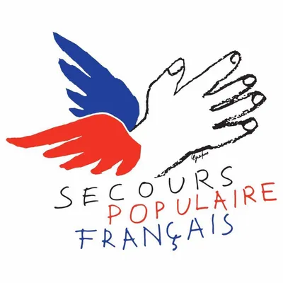

Learn about the Grapus art movement and its impact on graphic design.
parasitized visuals (arrows, handwritten additions, collages, offsets, distortion, blur)
Raymond Loewy designs the Studebaker, Grapus, 1987.
Hand-made lettering by Jean Cocteau 1981 (Known to all, the winged hand in blue and red has been part of SPF's history since 1981, thanks to the work of the Grapus collective. Previously, the association signed its name with the three letters SPF, and some posters were illustrated by big names such as Jean Cocteau).
Pierre Bernard 1942-2015 (Trained at the Arts Déco, in the late 1960s he co-founded the Grapus collective with fellow graduates François Miehe, Gérard Paris-Clavel, Jean-Paul Bachollet and Alex Jordan. Over a period of twenty years, this fine team totally reinvented "public utility graphics", collectively creating thousands of images that were committed, angry, funny, powerful, poetic...)
Vincent Perrottet (Born in 1958. From 1978 to 1984, he studied at the École nationale supérieure des Arts Décoratifs, video/cinema section. In 1983, he had a decisive encounter with the Grapus collective, with whom he worked until 1989. This collaboration was interspersed with the creation of two young graphic designers' collectives: 1984/1985 Thève, Perrottet, Milville, 1987/1988 "Courage" with Pierre di Sciullo and Pierre Milville).
Poster Grapus at the Musee de l'affiche, Grapus, 1982 (Donated by Vincent Perrottet and Sido Perrottet to the Centre Pompidou in 2017).
poster La culture pénétrant les idées dominantes, Grapus, 1985